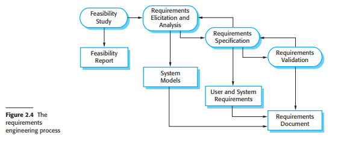
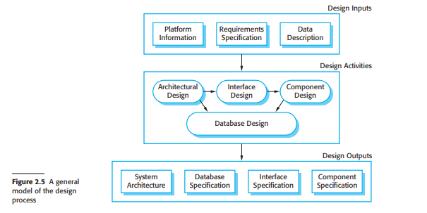
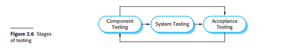
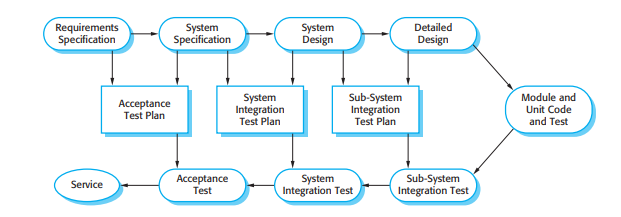
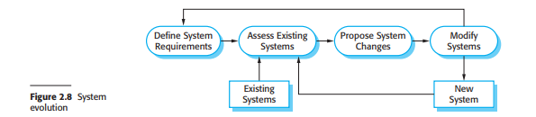
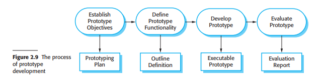
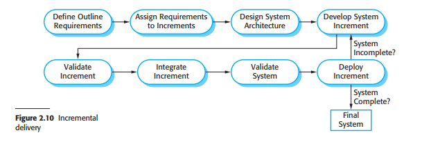
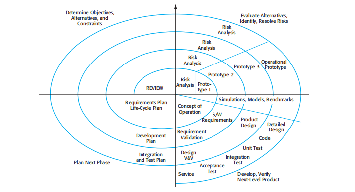
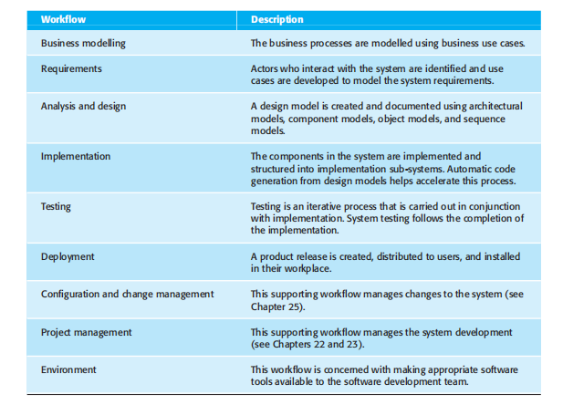

<!DOCTYPE html>
<html lang="en">
<head>
    <meta charset="UTF-8">
    <meta name="viewport" content="width=device-width, initial-scale=1.0">
    <title>Software processes</title>
</head>
<body>

<header>
    
        <section>
            
            <p><b>Systematic.dev</b></p>
            <hr>
        </section>
        
</header>


<main>
    
    <section>

    <h1>SOFTWARE PROCESSES</h1>
    <p>Objectives</p>
    <p>The objective of this chapter is to introduce you to the idea of a software
    process—a coherent set of activities for software production. When you
    have read this chapter you will:</p>

    <ul>
        <li>understand the concepts of software processes and software process models;</li>
        <li>have been introduced to three generic software process models and when they might be used;</li>
        <li>know about the fundamental process activities of software requirements engineering, software development, testing, and evolution;</li>
        <li>understand why processes should be organized to cope with changes in the software requirements and design;</li>
        <li>understand how the Rational Unified Process integrates good software engineering practice to create adaptable software processes.</li>
    </ul>
    
    
    <h1>Contents</h1>
   
        <p><b>2.1</b> Software process models</p>
        <p><b>2.2</b> Process activities</p>
        <p><b>2.3</b> Coping with change</p>
        <p><b>2.4</b> The Rational Unified Process</p>
    </section>

</header>


    <br>
    <p><b>28 </b> Chapter 2 - Software processes</p>
    <hr>

<section>

<p> A software process is a set of related activities that leads to the production of a software product. These activities may involve the development of software from scratch
    in a standard programming language like Java or C. However, business applications
    are not necessarily developed in this way. New business software is now often developed by extending and modifying existing systems or by configuring and integrating
    off-the-shelf software or system components.</p>
<p> There are many different software processes but all must include four activities
    that are fundamental to software engineering:</p>

<p> 1. <i>Software specification</i> The functionality of the software and constraints on its operation must be defined.</p>
<p> 2. <i>Software design and implementation</i> The software to meet the specification must be produced.</p>
<p> 3. <i>Software validation</i> The software must be validated to ensure that it does what the customer wants.</p>
<p> 4. <i>Software evolution</i> The software must evolve to meet changing customer needs.</p>

</section>


<section>
    <br>
    <h1>2.1 Software process models</h1>
    <hr>
    <p>1. <i>The waterfall model</i> This takes the fundamental process activities of specification, development, validation, and evolution and represents them as separate process phases such as requirements specification, software design, implementation, testing, and so on.</p>

</section>

<section>
   
</section>


<section> 
    <p>2. <i>Incremental development</i> This approach interleaves the activities of specification, development, and validation. The system is developed as a series of versions (increments), with each version adding functionality to the previous version.</p>
    </section>

<section>
   
</section>

<section>
    <p>3. <i>Reuse-oriented software engineering</i> This approach is based on the existence of a significant number of reusable components. The system development process focuses on integrating these components into a system rather than developing them from scratch.</p>
</section>

<section> 
    
</section>

<section>
    <br>
    <h1>2.2 Process activities</h1>
    <hr>
    <p>Real software processes are interleaved sequences of technical, collaborative, and managerial activities with the overall goal of specifying, designing, implementing, and testing a software system. Software developers use a variety of different software tools in their work. Tools are particularly useful for supporting the editing of different types of document and for managing the immense volume of detailed information that is generated in a large software project.</p>
    <p>The four basic process activities of specification, development, validation, and evolution are organized differently in different development processes. In the waterfall model, they are organized in sequence, whereas in incremental development they are interleaved. How these activities are carried out depends on the type of software, people, and organizational structures involved. In extreme programming, for example, specifications are written on cards. Tests are executable and developed before the program itself. Evolution may involve substantial system restructuring or refactoring.</p>

    <br>
    <figcaption><strong>2.2.1</strong> Software specification</figcaption>
    <p>1. <i>Feasibility study</i> An estimate is made of whether the identified user needs may be satisfied using current software and hardware technologies. The study considers whether the proposed system will be cost-effective from a business point of view and if it can be developed within existing budgetary constraints. A feasibility study should be relatively cheap and quick. The result should inform the decision of whether or not to go ahead with a more detailed analysis.</p>
    <p>2. <i>Requirements elicitation and analysis</i> This is the process of deriving the system requirements through observation of existing systems, discussions with potential users and procurers, task analysis, and so on. This may involve the development of one or more system models and prototypes. These help you understand the system to be specified.</p>
    <p>3. <i>Requirements specification</i> Requirements specification is the activity of translating the information gathered during the analysis activity into a document that defines a set of requirements. Two types of requirements may be included in this document. User requirements are abstract statements of the system requirements for the customer and end-user of the system; system requirements are a more detailed description of the functionality to be provided.</p>
    <p>4. <i>Requirements validation</i> This activity checks the requirements for realism, consistency, and completeness. During this process, errors in the requirements document are inevitably discovered. It must then be modified to correct these problems.</p>

    
</section>

<section>
    <br>
    <figcaption><strong>2.2.2</strong> Software design and implementation</figcaption>

    <p>The implementation stage of software development is the process of converting a system specification into an executable system. It always involves processes of software design and programming but, if an incremental approach to development is used, may also involve refinement of the software specification.</p>
    <p>Figure 2.5 is an abstract model of this process showing the inputs to the design process, process activities, and the documents produced as outputs from this process.</p>

    

    <p>1. Architectural design, where you identify the overall structure of the system, the principal components (sometimes called sub-systems or modules), their relationships, and how they are distributed.</p>
    <p>2. Interface design, where you define the interfaces between system components. This interface specification must be unambiguous. With a precise interface, a component can be used without other components having to know how it is implemented. Once interface specifications are agreed, the components can be designed and developed concurrently.</p>
    <p>3. Component design, where you take each system component and design how it will operate. This may be a simple statement of the expected functionality to be implemented, with the specific design left to the programmer. Alternatively, it may be a list of changes to be made to a reusable component or a detailed design model. The design model may be used to automatically generate an implementation.</p>
    <p>4. Database design, where you design the system data structures and how these are to be represented in a database. Again, the work here depends on whether an existing database is to be reused or a new database is to be created.</p>

    

</section>

<section>
    <br>
    <figcaption><strong>2.2.3</strong> Software validation</figcaption>
    <p>Software validation or, more generally, verification and validation (V&V) is intended to show that a system both conforms to its specification and that it meets the expectations of the system customer. Program testing, where the system is executed using simulated test data, is the principal validation technique. Validation may also involve checking processes, such as inspections and reviews, at each stage of the software process from user requirements definition to program development. Because of the predominance of testing, the majority of validation costs are incurred during and after implementation</p>

    <p>1. Development testing The components making up the system are tested by the people developing the system. Each component is tested independently, without other system components. Components may be simple entities such as functions or object classes, or may be coherent groupings of these entities. Test automation tools, such as JUnit (Massol and Husted, 2003), that can re-run component tests when new versions of the component are created, are commonly used.</p>
    <p>2. System testing System components are integrated to create a complete system. This process is concerned with finding errors that result from unanticipated interactions between components and component interface problems. It is also concerned with showing that the system meets its functional and non-functional requirements, and testing the emergent system properties. For large systems, this may be a multi-stage process where components are integrated to form subsystems that are individually tested before these sub-systems are themselves integrated to form the final system.</p>
    <p>3. Acceptance testing This is the final stage in the testing process before the system is accepted for operational use. The system is tested with data supplied by the system customer rather than with simulated test data. Acceptance testing may reveal errors and omissions in the system requirements definition, because the real data exercise the system in different ways from the test data. Acceptance testing may also reveal requirements problems where the system’s facilities do not really meet the user’s needs or the system performance is unacceptable.</p>

    

</section>

<section>
    <br>
    <figcaption><strong>2.2.4</strong> Software evolution</figcaption>
    <p>The flexibility of software systems is one of the main reasons why more and more software is being incorporated in large, complex systems. Once a decision has been made to manufacture hardware, it is very expensive to make changes to the hardware design. However, changes can be made to software at any time during or after the system development. Even extensive changes are still much cheaper than corresponding changes to system hardware.</p>
    <p>Historically, there has always been a split between the process of software development and the process of software evolution (software maintenance). People think of software development as a creative activity in which a software system is developed from an initial concept through to a working system. However, they sometimes think of software maintenance as dull and uninteresting. Although the costs of maintenance are often several times the initial development costs, maintenance processes are sometimes considered to be less challenging than original software development.</p>
    <p>This distinction between development and maintenance is increasingly irrelevant. Hardly any software systems are completely new systems and it makes much more sense to see development and maintenance as a continuum. Rather than two separate processes, it is more realistic to think of software engineering as an evolutionary process (Figure 2.8) where software is continually changed over its lifetime in response to changing requirements and customer needs.</p>

</section>

<section>
    <hr>
    <br>
    <h1>2.3 Coping with change</h1>
    <p>Change is inevitable in all large software projects. The system requirements change as the business procuring the system responds to external pressures and management priorities change. As new technologies become available, new design and implementation possibilities emerge. Therefore whatever software process model is used, it is essential that it can accommodate changes to the software being developed.</p>

    


    <br>
    <p>Change adds to the costs of software development because it usually means that work that has been completed has to be redone. This is called rework. For example, if the relationships between the requirements in a system have been analyzed and new requirements are then identified, some or all of the requirements analysis has to be repeated. It may then be necessary to redesign the system to deliver the new requirements, change any programs that have been developed, and re-test the system.</p>

    <p>There are two related approaches that may be used to reduce the costs of rework:</p>

    <p>1. Change avoidance, where the software process includes activities that can anticipate possible changes before significant rework is required. For example, a prototype system may be developed to show some key features of the system to customers. They can experiment with the prototype and refine their requirements before committing to high software production costs.</p>
    <p>2. Change tolerance, where the process is designed so that changes can be accommodated at relatively low cost. This normally involves some form of incremental development. Proposed changes may be implemented in increments that have not yet been developed. If this is impossible, then only a single increment (a small part of the system) may have to be altered to incorporate the change.</p>


    <p>1. System prototyping, where a version of the system or part of the system is developed quickly to check the customer’s requirements and the feasibility of some design decisions. This supports change avoidance as it allows users to experiment with the system before delivery and so refine their requirements. The number of requirements change proposals made after delivery is therefore likely to be reduced.</p>
    <p>2. Incremental delivery, where system increments are delivered to the customer for comment and experimentation. This supports both change avoidance and change tolerance. It avoids the premature commitment to requirements for the whole system and allows changes to be incorporated into later increments at relatively low cost.</p>

    
</section>

<section>
    <br>
    <figcaption><strong>2.3.1</strong> Prototyping</figcaption>
    <p>A prototype is an initial version of a software system that is used to demonstrate concepts, try out design options, and find out more about the problem and its possible solutions. Rapid, iterative development of the prototype is essential so that costs are controlled and system stakeholders can experiment with the prototype early in the software process.</p>
    <p>Prototypes do not have to be executable to be useful. Paper-based mock-ups of the system user interface (Rettig, 1994) can be effective in helping users refine an interface design and work through usage scenarios. These are very cheap to develop and can be constructed in a few days. An extension of this technique is a Wizard of Oz prototype where only the user interface is developed. Users interact with this interface but their requests are passed to a person who interprets them and outputs the appropriate response.</p>

    

</section>

<section>
    <br>
    <figcaption><strong>2.3.2</strong>Incremental delivery</figcaption>

    <p>Incremental delivery (Figure 2.10) is an approach to software development where some of the developed increments are delivered to the customer and deployed for use in an operational environment. In an incremental delivery process, customers identify, in outline, the services to be provided by the system. They identify which of the services are most important and which are least important to them. A number of delivery increments are then defined, with each increment providing a sub-set of the system functionality. The allocation of services to increments depends on the service priority, with the highest-priority services implemented and delivered first. Once the system increments have been identified, the requirements for the services to be delivered in the first increment are defined in detail and that increment is developed. During development, further requirements analysis for later increments can take place but requirements changes for the current increment are not accepted. Once an increment is completed and delivered, customers can put it into service. This means that they take early delivery of part of the system functionality. They can experiment with the system and this helps them clarify their requirements for later system increments. As new increments are completed, they are integrated with existing increments so that the system functionality improves with each delivered increment.</p>


    <p>Incremental delivery has a number of advantages:</p>
    <p>1. Customers can use the early increments as prototypes and gain experience that informs their requirements for later system increments. Unlike prototypes, these are part of the real system so there is no re-learning when the complete system is available.</p>
    <p>2. Customers do not have to wait until the entire system is delivered before they can gain value from it. The first increment satisfies their most critical require ments so they can use the software immediately.</p>
    <p>3. The process maintains the benefits of incremental development in that it should be relatively easy to incorporate changes into the system.</p>
    <p>4. As the highest-priority services are delivered first and increments then inte grated, the most important system services receive the most testing. This means that customers are less likely to encounter software failures in the most important parts of the system.</p>


    <p>However, there are problems with incremental delivery:</p>
    <p>1. Most systems require a set of basic facilities that are used by different parts of the system. As requirements are not defined in detail until an increment is to be implemented, it can be hard to identify common facilities that are needed by all increments.</p>
    <p>2. Iterative development can also be difficult when a replacement system is being developed. Users want all of the functionality of the old system and are often unwilling to experiment with an incomplete new system. Therefore, getting useful customer feedback is difficult.</p>
    <p>3. The essence of iterative processes is that the specification is developed in conjunction with the software. However, this conflicts with the procurement model of many organizations, where the complete system specification is part of the system development contract. In the incremental approach, there is no complete system specification until the final increment is specified. This requires a new form of contract, which large customers such as government agencies may find difficult to accommodate.</p>
</section>


<section> 
    <figcaption><strong>2.3.3 </strong>Boehm’s spiral model</figcaption>
    <p>A risk-driven software process framework (the spiral model) was proposed by Boehm (1988). This is shown in Figure 2.11. Here, the software process is represented as a spiral, rather than a sequence of activities with some backtracking from one activity to another. Each loop in the spiral represents a phase of the software process. Thus, the innermost loop might be concerned with system feasibility, the next loop with requirements definition, the next loop with system design, and so on. The spiral model combines change avoidance with change tolerance. It assumes that changes are a result of project risks and includes explicit risk management activities to reduce these risks.</p>

    

    <p>Each loop in the spiral is split into four sectors:</p>
    <p>1. <i>Objective setting</i> Specific objectives for that phase of the project are defined. Constraints on the process and the product are identified and a detailed management plan is drawn up. Project risks are identified. Alternative strategies, depending on these risks, may be planned.</p>
    <p>2. <i>Risk assessment and reduction</i> For each of the identified project risks, a detailed analysis is carried out. Steps are taken to reduce the risk. For example, if there is a risk that the requirements are inappropriate, a prototype system may be developed.</p>
    <p>3. <i>Development and validation</i> After risk evaluation, a development model for the system is chosen. For example, throwaway prototyping may be the best development approach if user interface risks are dominant. If safety risks are the main consideration, development based on formal transformations may be the most appropriate process, and so on. If the main identified risk is sub-system integration, the waterfall model may be the best development model to use.</p>
    <p>4. <i>Planning</i> The project is reviewed and a decision made whether to continue with a further loop of the spiral. If it is decided to continue, plans are drawn up for the next phase of the project.</p>

    <p>The main difference between the spiral model and other software process models is its explicit recognition of risk. A cycle of the spiral begins by elaborating objectives such as performance and functionality. Alternative ways of achieving these objectives, and dealing with the constraints on each of them, are then enumerated. Each alternative is assessed against each objective and sources of project risk are identified. The next step is to resolve these risks by information-gathering activities such as more detailed analysis, prototyping, and simulation.</p>
        
    <p>Once risks have been assessed, some development is carried out, followed by a planning activity for the next phase of the process. Informally, risk simply means something that can go wrong. For example, if the intention is to use a new programming language, a risk is that the available compilers are unreliable or do not produce sufficiently efficient object code. Risks lead to proposed software changes and project problems such as schedule and cost overrun, so risk minimization is a very important project management activity. Risk management, an essential part of project management, is covered in Chapter 22.</p>

</section>


<section>
    <br>
    <h1>2.4 The Rational Unified Process</h1>
    <hr>
    <p>The Rational Unified Process (RUP) (Krutchen, 2003) is an example of a modern process model that has been derived from work on the UML and the associated Unified Software Development Process (Rumbaugh, et al., 1999; Arlow and Neustadt, 2005). I have included a description here, as it is a good example of a hybrid process model. It brings together elements from all of the generic process models (Section 2.1), illustrates good practice in specification and design (Section 2.2) and supports prototyping and incremental delivery (Section 2.3).</p>
    <p>The RUP recognizes that conventional process models present a single view of the process. In contrast, the RUP is normally described from three perspectives:</p>
    <p>1. A dynamic perspective, which shows the phases of the model over time.</p>
    <p>2. A static perspective, which shows the process activities that are enacted.</p>
    <p>3. A practice perspective, which suggests good practices to be used during the process.</p>


    <p>Most descriptions of the RUP attempt to combine the static and dynamic perspectives in a single diagram (Krutchen, 2003). I think that makes the process harder to understand, so I use separate descriptions of each of these perspectives. The RUP is a phased model that identifies four discrete phases in the software process. However, unlike the waterfall model where phases are equated with process activities, the phases in the RUP are more closely related to business rather than technical concerns. Figure 2.11 shows the phases in the RUP. These are:</p>
    <p>1. <i>Inception</i> The goal of the inception phase is to establish a business case for the system. You should identify all external entities (people and systems) that will interact with the system and define these interactions. You then use this information to assess the contribution that the system makes to the business.</p>
    <p>2. <i>Elaboration</i> The goals of the elaboration phase are to develop an understanding of the problem domain, establish an architectural framework for the system, develop the project plan, and identify key project risks. On completion of this phase you should have a requirements model for the system, which may be a set of UML use-cases, an architectural description, and a development plan for the software.</p>
    <p>3. <i>Construction</i> The construction phase involves system design, programming, and testing. Parts of the system are developed in parallel and integrated during this phase. On completion of this phase, you should have a working software system and associated documentation that is ready for delivery to users.</p>
    <p>4. <i>Transition</i> The final phase of the RUP is concerned with moving the system from the development community to the user community and making it work in a real environment. This is something that is ignored in most software process models but is, in fact, an expensive and sometimes problematic activity. On completion of this phase, you should have a documented software system that is working correctly in its operational environment.</p>


    

    <p>The practice perspective on the RUP describes good software engineering prac tices that are recommended for use in systems development. Six fundamental best practices are recommended:</p>
    <p>1. <i>Develop software iteratively</i> Plan increments of the system based on customer priorities and develop the highest-priority system features early in the development process.</p>
    <p>2. <i>Manage requirements</i> Explicitly document the customer’s requirements and keep track of changes to these requirements. Analyze the impact of changes on the system before accepting them.</p>
    <p>3. <i>Use component-based architectures</i> Structure the system architecture into components, as discussed earlier in this chapter.</p>
    <p>4. <i>Visually model software</i> Use graphical UML models to present static and dynamic views of the software.</p>
    <p>5. <i>Verify software quality</i> Ensure that the software meets the organizational quality standards.</p>
    <p>6. <i>Control changes to software</i> Manage changes to the software using a change management system and configuration management procedures and tools.</p>
    
</section>


</main>


<footer>
    <br>
    <hr>
    <section>
            
            <p><b>Systematic.dev</b></p>

            <p><i class="fa-solid fa-location-dot"></i> 123 Innovation Street, Tech City, 45678</p>

        </section>

        <section>
            <p><b>CONTACT US</b></p>
            <i class="fa-solid fa-location-dot"></i>  
            <i class="fa-brands fa-facebook"></i>  
            <i class="fa-brands fa-twitter"></i>  
            <i class="fa-brands fa-instagram"></i>  
            <i class="fa-brands fa-linkedin"></i> 
        </section>

        <section>
            <p>© Systematic.dev. All rights reserved</p>
        </section>
    </footer>


  
    


</body>
</html>
